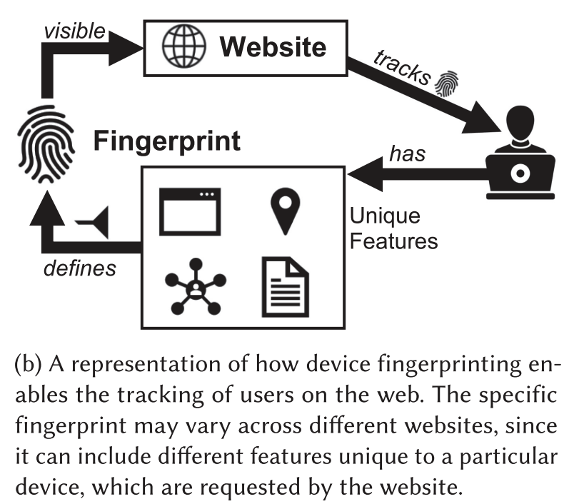
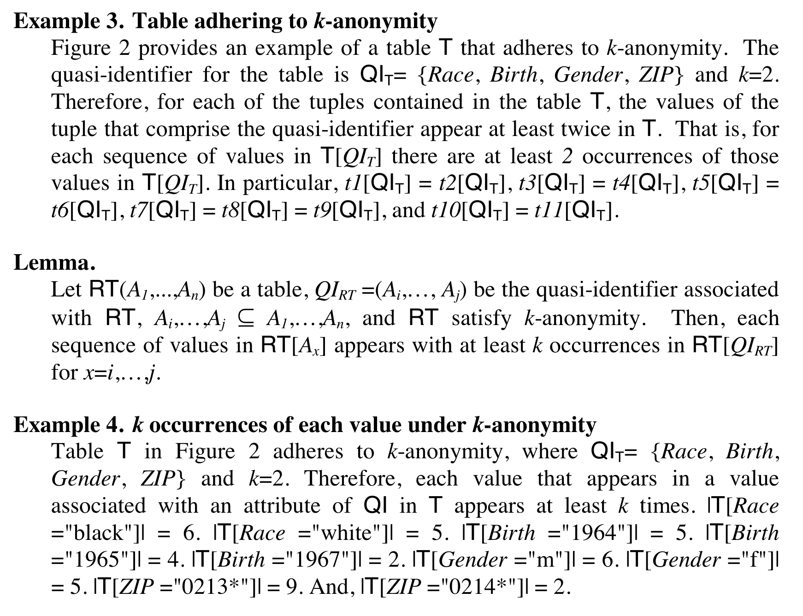
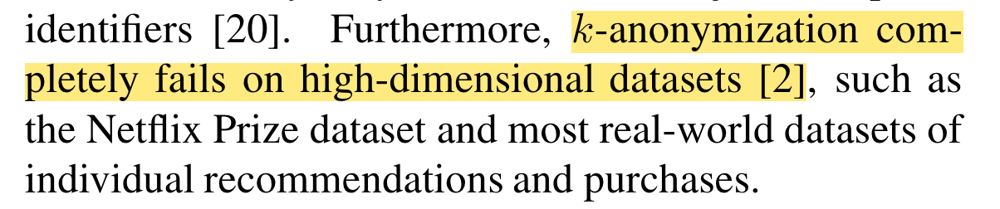
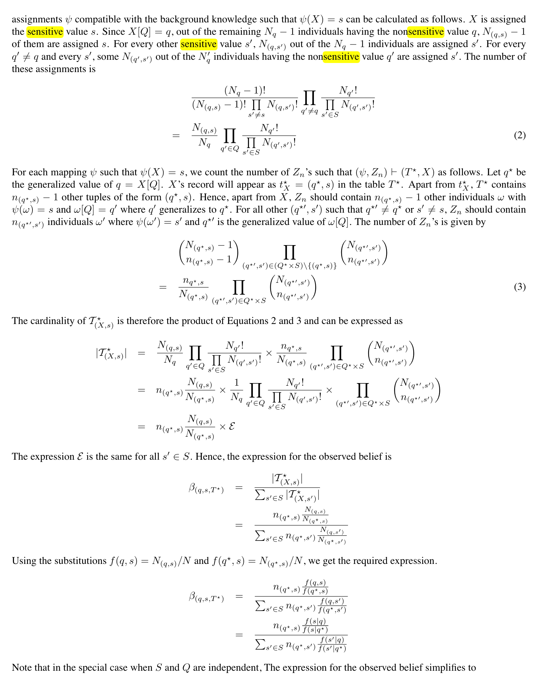
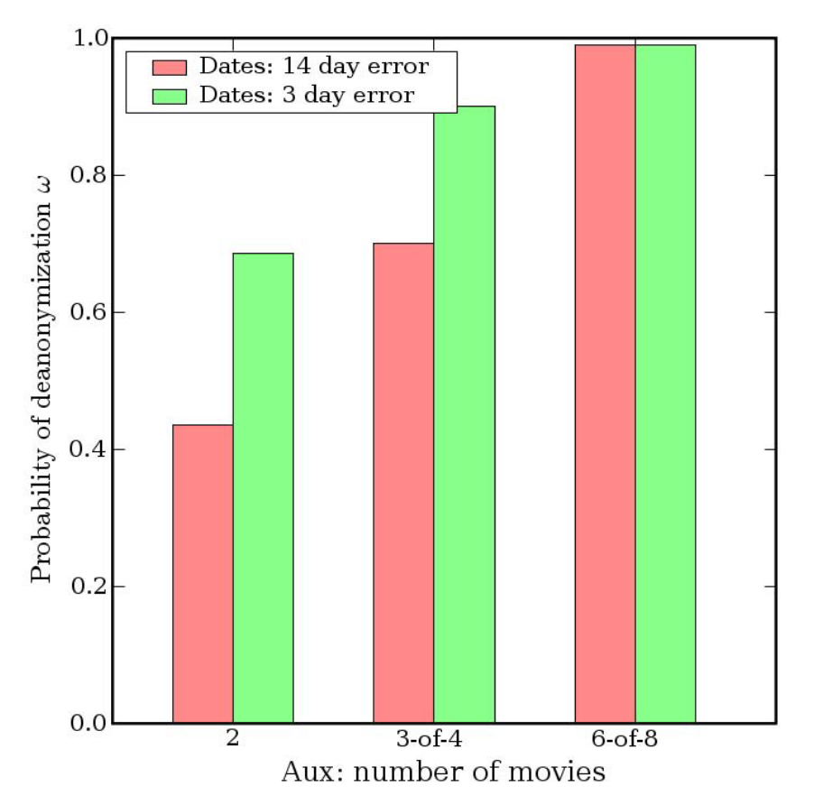
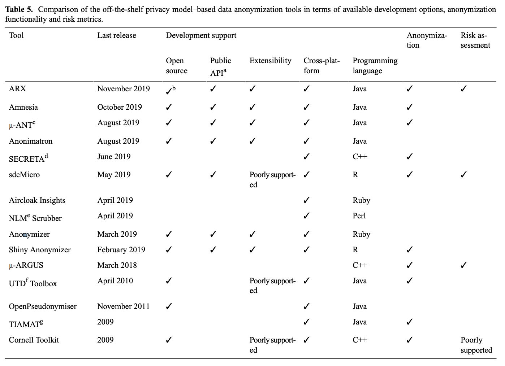
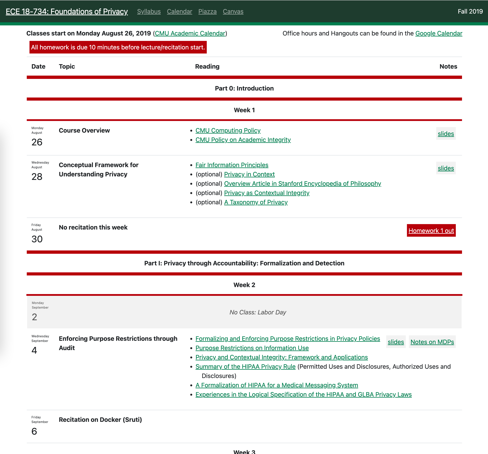
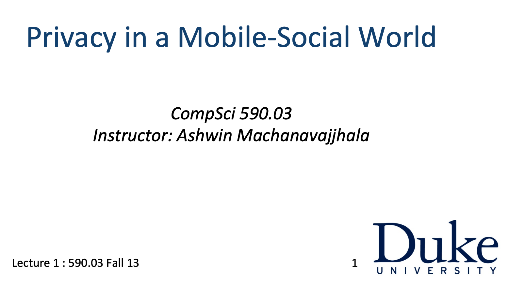

Why is data anonymisation important?
What are specific risks of deanonymisation of health data?
Anonymity measures: k-anonymity and l-diversity
Case studies of deanonymisation
… and why anonymity measures are often not enough
R packages for working with anonymouse data and sampling
Mostly during this course we’ve been talking about surveys or studies where data is explicitly being collected - and participants willingly submit their data.
But that’s often not the case.
Data is collected continuously about individuals without their explicit consent - and often without implicit consent.
Cookies [and similar technologies] are ever present in the modern web.
They allow websites to track both the websites that we visit and how we engage with websites.
… but what about all those cookie popups?!

The GDPR Policy1 included mention of “cookie identifiers” which ultimately led to the cookie consent popups you see everywhere.
For a common sense description of what the policy requires see gdpr.eu/cookies/2
The policy came into effect in 2018 - and the cookie avalanche started.
These are the primary ways websites circumvent the GDPR cookie policy:
The biggest issue with targeting cookies is they’re difficult to define and more modern tools like fingerprinting are harder to track.
User’s are nudged to accept cookies by auto selecting “Accept”
Dark patterns are employed to prevent users from refusing to accept cookies5.
Overall, the policy has probably made things worse.
GDPR impacted smaller advertisement companies considerably more than large brands, such as Google and Facebook, leading to a higher market concentration for these companies, which, in turn, may increase the privacy threat, rather than decrease it Source: Kretschmer et al 20214
There are simple uninteresting answers to this:
Selling tracking data to advertising networks
Using tracking data to target products at users
Can we get some examples of what they track?
I strongly recommend reading all of this article - wired.co.uk/article/my-identity-for-sale9.
The article is from 2014, but as we’ve discussed the GDPR cookie policy has if anything made this situation worse.
The article also provides a wealth of other examples of data tracking beyond cookies. These would be good examples for your assignment.
The quote below is from the article and summarises descriptions of Madhumita’s life tracked without consent.
I’m a 26-year-old British Asian woman, working in media and living in an SW postcode in London. I’ve previously lived at two addresses in Sussex and two others in north-east London. While I was growing up, my family lived in a detached house, took holidays to India every year, donated to medical charities, did most of the weekly shopping online at Ocado and read the Financial Times. Now, I rent a recently converted flat owned by a private landlord and have a housemate. I’m interested in movies and startups, have taken five holidays (mostly to visit friends abroad) in the last 12 months and I’m going to buy flights within 14 days. My annual income is probably between £30,000 and £39,999. I don’t have a TV or like watching scheduled television…
There’s an A&E waiting time survey that’s sent to folks that attend A&E.
This survey is sent without patients opting into it.
The Section 251 of the NHS Act 200610 provides for the use of confidential patient data without consent for a specific purpose by the HRA or the Secretary of State for Health and Social Care.
That’s an exception to the Data Protection Act11!
This means that there are people looking at this data and deciding who to target.
This exception was also used during the COVID-19 pandemic, it’s not just used for surveying hospital wait times!
Note that the NHS makes sure there’s an opt out [once you’ve been invited]
However, as has always been the case, patients/service users must be given the opportunity to opt-out.
Data anonymisation is important because data is collected everywhere all of the time
… how does that match up with GDPR and the Data Protection Act?
The DPA11 provides 8 rights for individuals:
The right to be informed
The right of access
The right to rectification
The right to erasure
The right to restrict processing
The right to data portability
The right to object
Rights in relation to automated decision making and profiling.
If we don’t know that data is being collected - or by which organisations - our individual rights are not being protected.
This opens up lots of ethical questions. We’ll discuss these in the next lecture about data ethics.
In this lecture we’re going to focus on the specific risks to deanonymisation
Individuals
It’s the dangers to individuals that we should primarily be concerned with.
There are significant risks to individual liberty, livelihood and life from deanonymisation.
Organisations
However, organisations also suffer if data they store/process is deanonymised.
Organisations might suffer reputational damage
Organisations might suffer legal difficulties, including fines
Let’s focus on the individual for now. The ICO provides a useful guide to managing data protection risk designed for organisations12
First and foremost, there is a risk of:
This in and of itself should be of concern, but more specifically
There is also a significant risk from sensitive information being in the public domain that:
Individuals might suffer harassment, attack and/or injury
Individuals might suffer persecution
Sensitive information might be sold to third-party organisations resulting in a change in service options, costs or other loss.
Private healthcare data might be used by insurers to increase product fees or terminate existing products.
Employers could potentially use this information in employment decisions.
Remember that the DPA (and GDPR) provides specific rights (or protections) for individual’s data. If data is sold without knowledge these rights cannot be guaranteed.
These are the “protected characteristics” defined in the Equality Act 201013
Age
Disability
Gender reassignment
Marriage and Civil Partnership
Pregnancy and Maternity
Race
Religion
Sex
Sexual Orientation.
Frustratingly, and inhumanely there is prejudice against individuals in all of these groups.
This prejudice can be found in individual actions, from hate groups, as well as institutional policies and practices.
De-anonymisation of health data can realistically [and often easily] expose individual’s protected characteristics.
All individual data should be considered private, but there are significant risks to the de-anonymisation of sensitive healthcare data.
Recall how the Data Protection Act11 identifies three types of health data:
“biometric data” means personal data resulting from specific technical processing relating to the physical, physiological or behavioural characteristics of an individual, which allows or confirms the unique identification of that individual, such as facial images or dactyloscopic data;
“data concerning health” means personal data relating to the physical or mental health of an individual, including the provision of health care services, which reveals information about his or her health status;
“genetic data” means personal data relating to the inherited or acquired genetic characteristics of an individual which gives unique information about the physiology or the health of that individual and which results, in particular, from an analysis of a biological sample from the individual in question;
In the late 90s there was a rapid conceptualisation of how easy it is to de-anonymisation large, public datasets.
In the late 90s there was a rapid conceptualisation of how easy de-anonymisation is of large, public datasets.
Two years later in 20021 a statistical technique called k-anonymity was introduced to measure the risk of re-identification.
… by Latanya Sweeney16!
Originally her research into de-anonymisation was poorly received.
[1] Technically, the 2002 paper expands on the initial concept introduced in 1998 by Samarati and Sweeney18
k-anonymity is a property of a dataset that has been subject to anonymisation.
k-anonymity is an integer value that guarantees internal uniqueness of individuals amongst k - 1 individuals.
Unfortunately, a lot of the material written about k-anonymity is confusing because people don’t declare their assumptions in calculating k values.
Let’s consider a simple pretend dataset.
We consider each column in the data to be an attribute.
These attributes can be categorised into two types of identifer:
Unique identifiers
Quasi-indentifiers
| name | region | age_range | disease |
|---|---|---|---|
| Saindhavi | England | 20-30 | Heart |
| Enio | England | 20-30 | Heart |
| Daury | England | 20-30 | Heart |
| Alphus | England | 20-30 | Pancreatic |
| Balian | England | 20-30 | Pancreatic |
| Kenyea | England | 20-30 | Pancreatic |
| Gracielynn | Wales | 40-50 | Liver |
| Aliye | Wales | 40-50 | Liver |
| Kadince | Wales | 40-50 | Liver |
| Asaph | Wales | 40-50 | Liver |
Now we’ve thrown away the unique identifiers we need to decide which attributes are sensitive.
Sensitive attributes are medical/healthcare data that we need to protect from in the anonymisation process.
| Non-sensitive | Sensitive | |
|---|---|---|
| region | age_range | disease |
| England | 20-30 | Heart |
| England | 20-30 | Heart |
| England | 20-30 | Heart |
| England | 20-30 | Pancreatic |
| England | 20-30 | Pancreatic |
| England | 20-30 | Pancreatic |
| Wales | 40-50 | Liver |
| Wales | 40-50 | Liver |
| Wales | 40-50 | Liver |
| Wales | 40-50 | Liver |
There are now 3 different choices about how we calculate k-anonymity for our data.
Combining together all non-sensitive attributes compared to each sensitive attributes.
Combining together all attributes
For each individual attributes
Let’s go through each of these in turn.
| Non-sensitive | Sensitive | |
|---|---|---|
| region | age_range | disease |
| England | 20-30 | Heart |
| England | 20-30 | Heart |
| England | 20-30 | Heart |
| England | 20-30 | Pancreatic |
| England | 20-30 | Pancreatic |
| England | 20-30 | Pancreatic |
| Wales | 40-50 | Liver |
| Wales | 40-50 | Liver |
| Wales | 40-50 | Liver |
| Wales | 40-50 | Liver |
Combining together all non-sensitive attributes compared to each sensitive attributes.
In toy example like this we can go through manually any count how many individuals belong to each group.
Using this measure the dataset is 4-anonymous as all individuals are guaranteed anonymity amongst 3 others (ie k-1).
| disease | region | age_range | n_in_group |
|---|---|---|---|
| Heart | England | 20-30 | 6 |
| Heart | England | 20-30 | 6 |
| Heart | England | 20-30 | 6 |
| Pancreatic | England | 20-30 | 6 |
| Pancreatic | England | 20-30 | 6 |
| Pancreatic | England | 20-30 | 6 |
| Liver | Wales | 40-50 | 4 |
| Liver | Wales | 40-50 | 4 |
| Liver | Wales | 40-50 | 4 |
| Liver | Wales | 40-50 | 4 |
Combining together all attributes
When we measure across all attributes the k-anonymity of the dataset is reduced.
Using this metric, the data has 3-anonymity.
| disease | region | age_range | n_in_group |
|---|---|---|---|
| Heart | England | 20-30 | 3 |
| Heart | England | 20-30 | 3 |
| Heart | England | 20-30 | 3 |
| Pancreatic | England | 20-30 | 3 |
| Pancreatic | England | 20-30 | 3 |
| Pancreatic | England | 20-30 | 3 |
| Liver | Wales | 40-50 | 4 |
| Liver | Wales | 40-50 | 4 |
| Liver | Wales | 40-50 | 4 |
| Liver | Wales | 40-50 | 4 |
For each individual attribute
When we measure the anonymity of each individual variable the dataset has 2-anonymity
We always use the smallest value of k for our specific measure.
| disease | region | age_range |
|---|---|---|
| Heart | England | 20-30 |
| Heart | England | 20-30 |
| Heart | England | 20-30 |
| Pancreatic | England | 20-30 |
| Pancreatic | England | 20-30 |
| Pancreatic | England | 20-30 |
| Liver | Wales | 40-50 |
| Liver | Wales | 40-50 |
| Liver | Wales | 40-50 |
| Liver | Wales | 40-50 |
As we’ve seen, each of these methods gives a different measure of the anonymity of the data.
Combining together all non-sensitive attributes compared to each sensitive attributes.
Combining together all attributes
For each individual attributes
Frustratingly it’s quite rare for authors to explicitly state which combination of attributes they use.
The methods are listed roughly in terms of the frequency that I’ve seen them in the literature.
| Non-sensitive | Sensitive | |
|---|---|---|
| region | age_range | disease |
| England | 20-30 | Heart |
| England | 20-30 | Heart |
| England | 20-30 | Heart |
| England | 20-30 | Pancreatic |
| England | 20-30 | Pancreatic |
| England | 20-30 | Pancreatic |
| Wales | 40-50 | Liver |
| Wales | 40-50 | Liver |
| Wales | 40-50 | Liver |
| Wales | 40-50 | Liver |
The definition I’ve given you is sufficient and precise.
But be aware that you’ll often16 see a more technical definition that uses set theory notation.
Ignore it. If a dataset is described as having “k-anonymity 10” that means for any row in the dataset there are at least 9 other rows identical to it.

Source: Formal definition for k-anonymity from Sweeney 200216
We are responsible for manipulating our dataset to achieve a desirable k-anonymity level.
Even though a minimum k value of 3 is often suggested, a common recommendation in practice is to ensure that there are at least five similar observations (k = 5)19
We have two tools available to us:
Generalisation
We generalise a dataset through coarsening.
Convert exact ages to age ranges
Convert DOB to year of birth
Trimming data, eg BS16 instead of BS16 6AB
Creating new groups
Suppression
Suppression removes data from a dataset.
We might suppress an attribute or set some specific values to “missing”.
Care must be taken to not suppress variables that are required for analysis.
SLIDE 1 OF 1
Create a new project for week-6
Create a new RMarkdown document called data-anonymisation.Rmd
Install the {wakefield} and {faux} package
The {wakefield} package is very useful for creating random datasets of categorical variables.
The package has 49 different built-in variables with pre-defined distributions:
| age | dice | hair | military | sex_inclusive |
| animal | dna | height | month | smokes |
| answer | dob | income | name | speed |
| area | dummy | internet_browser | normal | state |
| car | education | iq | political | string |
| children | employment | language | race | upper |
| coin | eye | level | religion | valid |
| color | grade | likert | sat | year |
| date_stamp | grade_level | lorem_ipsum | sentence | zip_code |
| death | group | marital | sex |
We generate datasets with the r_data_frame() function:
# A tibble: 10 × 6
ID Name DOB Income Smokes Death
<chr> <chr> <date> <dbl> <lgl> <lgl>
1 01 Dreniyah 2008-05-24 42462. TRUE FALSE
2 02 Alexiana 2008-11-06 60950. FALSE TRUE
3 03 Ashauria 2008-10-16 17069. FALSE TRUE
4 04 Azelea 2007-12-11 19028. FALSE FALSE
5 05 Krystof 2009-09-11 49067. TRUE FALSE
6 06 Loudes 2008-10-24 65993. FALSE FALSE
7 07 Rebeckah 2008-07-21 50860. FALSE FALSE
8 08 Jarek 2009-01-26 21266. FALSE FALSE
9 09 Gavrielle 2008-08-03 50405. FALSE TRUE
10 10 Tarajah 2008-05-07 28798. FALSE FALSECan you explain why you see different data on your machine?
When programming we use pseudorandom number generators to generate random numbers.
These are algorithms that deterministically give random numbers when given an input. We can therefore always get the same random numbers by setting the seed of the algorithm.
# A tibble: 10 × 6
ID Name Income DNA Smokes Death
<chr> <chr> <dbl> <fct> <lgl> <lgl>
1 01 Donaldeen 48108. Cytosine FALSE FALSE
2 02 Martiqua 36496. Guanine FALSE FALSE
3 03 Juliaann 12130. Thymine FALSE TRUE
4 04 Poyraz 53488. Cytosine FALSE TRUE
5 05 Boleslaus 46311. Adenine FALSE FALSE
6 06 Duc 56733. Adenine FALSE FALSE
7 07 Hadeer 52217. Thymine TRUE TRUE
8 08 Camilya 31854. Thymine FALSE TRUE
9 09 Ashlay 77153. Adenine TRUE TRUE
10 10 Dutch 62490. Adenine FALSE FALSELet’s pretend our dataset is from a study on the effect of income on smoking morbidity1.
When thinking about making this anonymous…
Are there any variables we should suppress?
How could we generalise the remaining variables?
| ID | Name | DOB | Income | Smokes | Death |
|---|---|---|---|---|---|
| 01 | Donaldeen | 2009-01-22 | 31854.26 | FALSE | FALSE |
| 02 | Martiqua | 2009-08-02 | 77153.29 | FALSE | FALSE |
| 03 | Juliaann | 2008-10-11 | 62490.28 | TRUE | TRUE |
| 04 | Poyraz | 2009-05-18 | 15462.24 | TRUE | FALSE |
| 05 | Boleslaus | 2008-08-16 | 19430.90 | FALSE | TRUE |
| 06 | Duc | 2008-08-20 | 24504.18 | FALSE | FALSE |
| 07 | Hadeer | 2009-04-01 | 27535.05 | TRUE | TRUE |
| 08 | Camilya | 2008-11-20 | 16200.33 | FALSE | FALSE |
| 09 | Ashlay | 2008-01-14 | 5750.53 | FALSE | FALSE |
| 10 | Dutch | 2008-11-02 | 59224.78 | FALSE | TRUE |
[1] I’m limited by the options given by {wakefield}. There is NO correlation implied here. You can tell because I don’t have a citation.
SLIDE 1 OF 2
1. Use this code to create a dataset:
2. Suppress inappropriate columns from the dataset.
SLIDE 1 OF 2
1. Generalise the remaining variables as follows:
Extract year of birth
Split income into 4 categories
“< £30,000”
“£30,000 - £70,000”
“£70,000 - £100,000”
“£100,000+”
2. Calculate the k-anonymity of the dataset
There are 3 known attacks for attempt to de-anonymise datasets with k-anonymity:
Unsorted matching attack
If an anonymised dataset is ordered in the same order that observations were recorded this is a potential attack vector. Dependent on the attack this might provide either an additional quant-identifier or (worst case) a unique identifer.
It’s a good practice to randomise the order of observations in anonymised data releases.
There are 3 known attacks for attempt to de-anonymise datasets with k-anonymity:
Subsequent release attacks
Large healthcare datasets might be used in multuple studies and be subject to multiple k-anonymised releases.
Temporal attacks are possible by analysing the modification of rows (eg health intervention) or the removal of data (eg morbidity).
Protecting against these attacks requires care and consideration. It is wise to consider the k-anonymity of combined releases.
There are 3 known attacks for attempt to de-anonymise datasets with k-anonymity:
Unsorted matching attack
Subsequent release attacks
Background knowledge
This is the most common attack vector and the Achilles’ heel of k-anonymity.
In these attacks background knowledge of relationships between quanti-identifiers is used to reduce anonymity.
High dimensionality means lots of quasi-identifiers.
… so where do we go next?
 Source: Narayanan and Shmatikov 200820
l-diversity is a more sophisticated measure of the anonymity of sensitive variables in an anonymised dataset - introduced by Machanavajjhala et al in 200621
This method depends on a Bayesian model of background knowledge.
We are not going to cover Bayesian statistics. Read statswithr.github.io/book/ if you’re interested.

In order to estimate l-diversity we need to once again consider the structure of our dataset.
We split our data into:
Sensitive variables - the medical variables.
Keys - the non-sensitive variables.
A dataset is l-diverse if for each unique combination of key attributes there are at least l “well-represented” values for each sensitive variable.
|
Non-sensitive attributes Keys |
Sensitive | |
|---|---|---|
| region | age_range | disease |
| England | 20-30 | Heart |
| England | 20-30 | Heart |
| England | 20-30 | Heart |
| England | 20-30 | Pancreatic |
| England | 20-30 | Pancreatic |
| England | 20-30 | Pancreatic |
| Wales | 40-50 | Liver |
| Wales | 40-50 | Liver |
| Wales | 40-50 | Liver |
| Wales | 40-50 | Liver |
A dataset is l-diverse if for each unique combination of key attributes there are at least l “well-represented” values for each sensitive variable.
For very simple datasets we can calculate l-diversity by hand.
However, for real-world applications there are 3 different methods for estimating “representative” values:
Distinct l-diversity. This is the most commn and simplest method, it’s what we’ve just used. It requires there are l distinct values.
Entropy l-diversity. This is a more sophisticated measure and goes beyond the scope of this lecture.
Recursive l-diversity. This is a compromise between the two methods.
| region | age_range | disease | l_diversity |
|---|---|---|---|
| England | 20-30 | Heart | 2 |
| England | 20-30 | Heart | 2 |
| England | 20-30 | Heart | 2 |
| England | 20-30 | Pancreatic | 2 |
| England | 20-30 | Pancreatic | 2 |
| England | 20-30 | Pancreatic | 2 |
| Wales | 40-50 | Liver | 1 |
| Wales | 40-50 | Liver | 1 |
| Wales | 40-50 | Liver | 1 |
| Wales | 40-50 | Liver | 1 |
SLIDE 1 OF 2
Install the {sdcMicro} package
Add this dataset to your .Rmd
data_diseases <- tibble(
name = c("Saindhavi", "Enio", "Daury", "Alphus", "Balian",
"Kenyea", "Gracielynn", "Aliye", "Kadince", "Asaph"),
region = c(rep("England", 6), rep("Wales", 4)),
age_range = c(rep("20-30", 6), rep("40-50", 4)),
disease = c(rep("Heart", 3), rep("Pancreatic", 3), rep("Liver", 4))
)
data_diseases# A tibble: 10 × 4
name region age_range disease
<chr> <chr> <chr> <chr>
1 Saindhavi England 20-30 Heart
2 Enio England 20-30 Heart
3 Daury England 20-30 Heart
4 Alphus England 20-30 Pancreatic
5 Balian England 20-30 Pancreatic
6 Kenyea England 20-30 Pancreatic
7 Gracielynn Wales 40-50 Liver
8 Aliye Wales 40-50 Liver
9 Kadince Wales 40-50 Liver
10 Asaph Wales 40-50 Liver SLIDE 2 OF 2
ldiversity() of the disease attributek-anonymity has well known vulnerabilities for high-dimensional datasets.
However. It is still worthwhile establishing at least 5-anonymity20 in released datasets containing sensitive attributes.
l-diversity is a much more sophisticated tool that provides stronger privacy protections. It’s verifiable NP-hard to re-identify individuals in l-diverse datasets.
However, l-diversity does not guarantee against re-identification. The coarsening of data might also degrade the usability of released data.
Source: Narayanan and Shmatikov 2008[]
Even though a minimum k value of 3 is often suggested, a common recommendation in practice is to ensure that there are at least five similar observations (k = 5)19
In October 2006 Netflix created a competition with the intention of improving their recommendation engine22.
Netflix sought an algorithm/methodology that would improve their recommendation algorithm.
Let’s get into this a little bit more.
Netflix provided over 100 million ratings (and their dates) from over 480 thousand randomly-chosen, anonymous subscribers on nearly 18 thousand movie titles. The data were collected between October, 1998 and December, 2005 and reflect the distribution of all ratings received by Netflix during this period. The ratings are on a scale from 1 to 5 (integral) stars.
| user | movie | date_of_grade | grade |
|---|---|---|---|
| 132 | Alien | 2006-01-01 | 5 |
| 132 | Aliens | 2006-01-02 | 4 |
It withheld over 3 million most-recent ratings from those same subscribers over the same set of movies as a competition qualifying set.
Netflix had an algorithm called Cinematch which attempted to predict a user’s rating of film X based on the user’s existing movie ratings.
The intention was for Cinematch to provide more personalised recommendations than simply using the average rating for movie X across all users.
Netflix chose to use the root mean squared error (RMSE) of the Cinematch and all other user ratings compared to a user’s actual rating as a measure of accuracy.
The Cinematch algorithm was roughly 10% more accurate than the all other user rating
The competition challenged participants to further improve this accuracy by at least an addition 10%.
The competition was extremely popular and it wasn’t won until 2009.
In fact, it’s quite a dramatic story with two winning entries submitted within a day of one another in 2009.
I’d recommend reading this thrillist.com article by Dan Jackson23.
With the announcement of a 2nd competition in 2009 a class-action suit was filed.
The suit described the Netlix Prize dataset as the biggest “voluntary privacy breach to date”. The Federal Trade Commission (FTC) also got involved.
Unfortunately, the case was settled privately so we don’t know the damages. The best I can get is this quote from a deleted blogpost25:
“To some, renting a movie such as Brokeback Mountain or even The Passion of the Christ can be a personal issue that they would not want published to the world.”
Jane Doe, a lesbian, who does not want her sexuality nor interests in gay and lesbian themed films broadcast to the world, seeks anonymity in this action
In the past few months, the Federal Trade Commission (FTC) asked us how a Netflix Prize sequel might affect Netflix members’ privacy, and a lawsuit was filed by KamberLaw LLC pertaining to the sequel. With both the FTC and the plaintiffs’ lawyers, we’ve had very productive discussions centered on our commitment to protecting our members’ privacy. We have reached an understanding with the FTC and have settled the lawsuit with plaintiffs. The resolution to both matters involves certain parameters for how we use Netflix data in any future research programs.
In light of all this, we have decided to not pursue the Netflix Prize sequel that we announced on August 6, 2009.” - Neil Hunt, Chief Product Officer @ Netflix
The exact mechanics of the algorithm behind Arvind Narayanan and Vitaly Shmatikov20 re-identification attack are beyond the scope of this course.
We’re going to walk through the mechanics of the attack.
It’s important to identify this paper introduces a robust statistical de-anonymisation of large sparse datasets that is not unique to the Netflix dataset.
With 8 movie ratings (of which we allow 2 to be completely wrong) and dates that may have a 3-day error, 96% of Netflix subscribers whose records have been released can be uniquely identified in the dataset.
Source: arXiv pre-print 200624
The de-anonymisation attack is powered by two data sources:
The authors have written an extremely useful FAQ26.
IMDB provides a large, public database of movie ratings.
An assumed similarity between Netflix and IMDB ratings provides a re-identification attack vector.
The paper provides a proof of concept attack using only 50 IMDB users.
Despite this, the authors are confident of positively cross-matching at least 2 users between the datasets.
The de-anonymisation attack is powered by two data sources:
The authors have written an extremely useful FAQ26.
Users do not need to have account on both IMDB and Netflix.
Q: Your algorithm only works if the person has accounts on both IMDb and Netflix and rates the same movies on both.
First, our algorithm is not specific to IMDb. You can run our algorithm for any person if they were a Netflix subscriber back in 2005 and you know a little bit about their movie viewing history.
Second, the IMDb record does not have to be the same as the Netflix record. Even a small intersection between the two records is sufficient for our algorithm to succeed with high statistical confidence.
The de-anonymisation attack is powered by two data sources:
The authors have written an extremely useful FAQ26.
Date of movie rating provides an additional attack vector.
Background knowledge might include account creation date, providing an attack vector for that user.

We’re going to look at a few additional case studies.
Please note that for most of these examples we are not explicitly talking about re-identification of users from de-anonymised datasets. Instead these case studies often breach privacy - sometimes publicly.
All of these case studies can be used in the data anonymisation section of your assessment. And please do share additional case studies with the group.
Remember I mentioned https://www.wired.co.uk/article/my-identity-for-sale as being a good source of additional case studies.
Facebook has a long and awful history of privacy breaches and questionable activity.
Facebook Beacon is one of the oldest examples, all the way back from 2007.
It’s a rare example where Mark Zuckerberg open talks about it as a mistake27.
Discuss why Facebook Beacon breaches user privacy
Beacon was designed to automatically post purchases to your friend’s Facebook feeds.
The company originally claimed the service was “opt-in”, but there was clear evidence this was not true.
However, after criticism Facebook provided an opt-out. Users were required to turn off the service.
A class action suit in 2009 was settled for $9.5million.
Google Buzz was a very short lived social networking tool:
It shut down explicitly due to privacy violations and Google settled for $8.5million30 within one month of the service launching.
Google automatically created public Google Profile pages using the Buzz service.
These public pages disclosed who the user most frequently communicated with via email or chat within GMail.
This was as designed. It wasn’t a mistake. Google designed this product like this!
When you first enter Google Buzz, to make the startup experience easier, we may automatically select people for you to follow based on the people you email and chat with most. Similarly, we may also suggest to others that they automatically follow you. You can review and edit the list of people you follow and block people from following you.
Your name, photo, and the list of people you follow and people following you will be displayed on your Google profile, which is publicly searchable on the Web. You may opt out of displaying the list of people following you and who you’re following on your profile.
Google Buzz, Privacy Policy
Do you know what these machines are for in Tesco?
These devices have embedded cameras that can track customer gaze - a proxy for the their attention.
The video feed from these devices is processed by software by Quividi that can estimate31:
Gender
Age
Mood
Their privacy page makes for interesting reading.
“Quividi’s software employs advanced facial detection software, not facial recognition technologies.” Quividi marketing

In 2021 Zuo et al32 performed a systematic review of de-anonymisation tools in digital health care.
There were two off-the-shelf tools identified that were built with R
However. There isn’t a one-size fits all methodology or guarantee of privacy through anonymisation.
k-anonymity and l-diversity are useful metrics and provide some assurance of privacy. But background knowledge attacks might undermine these.
We need to be vigilant and careful when:
Preparing data for release
Designing services
We’ve used the {wakefield} package to create fake datasets.
The {faux} package is a more sophisticated package for simulating datasets designed by Lise DeBruine.

This is an excellent module on privacy from Carnegie Mellon University.
You can find all lecture materials and even exercises here: https://course.ece.cmu.edu/~ece734/fall2019/syllabus.html
This quickly becomes very technical.

Ashwin Machanavajjhala has an excellent course about privacy in a mobile world - https://courses.cs.duke.edu/fall13/compsci590.3/
This quickly becomes very technical.
In this section you must explain:
What is an open dataset?
What is “health data”?
Why is it important to government, industry and academia that health datasets are made available?
What are some of the benefits to individuals and groups in making health datasets open?
What is data anonymisation and why is it important?
What are the dangers to individuals and groups in health data being data deanonymised?
What are some steps that can be taken to reduce the danger of deanonymisation?
In answering these questions, you must include details of at least two case studies about data deanonymisation. Include as much technical information as possible about how the data was deanonymized.